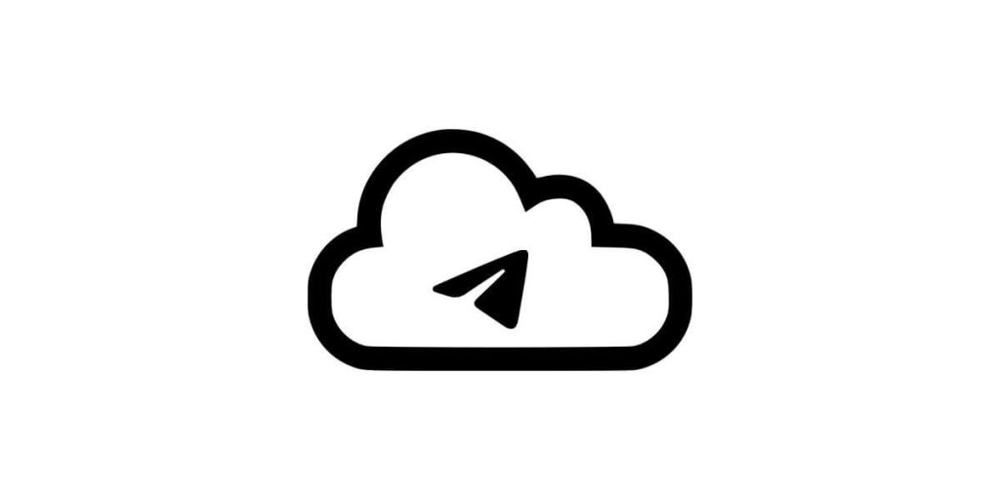
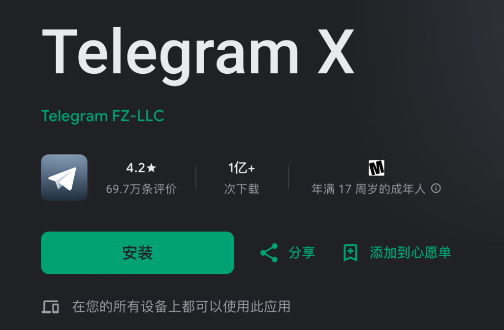

Telegram可以当网盘用吗？
是的，Telegram可以用作网盘存储文件。你可以利用“已保存的消息”功能上传文件、图片、视频等，并随时访问。此外，Telegram支持高达2GB的单个文件上传，云端存储不限时。但由于存储数据依赖Telegram服务器，长期存储稳定性无法保证，不建议作为主要网盘使用。
Telegram作为网盘的可行性分析
Telegram云存储的优势和局限性
- 存储容量大且无时间限制：Telegram允许用户上传单个文件最大2GB，并且服务器不会主动删除文件，即使是多年未使用的账号，文件依然可能存在，这使其成为一个方便的临时存储工具。
- 跨平台同步与快速分享：Telegram支持云端存储，文件可在不同设备间无缝同步。你可以通过“已保存的消息”或私人频道随时访问、下载文件，并可以快速分享给好友或群组。
- 不适合长期存储与管理：尽管Telegram服务器提供长期存储，但并不像传统网盘那样提供明确的存储管理功能。文件可能在特定情况下被删除或无法找到，并且Telegram缺少文件夹整理功能，使得文件管理较为混乱。
与传统网盘相比的存储特点
- 无需额外付费即可享受大容量存储：相比于Google Drive、Dropbox等传统网盘，Telegram不需要购买额外存储空间即可上传和存储大量文件，适合临时备份或分享文件。
- 缺乏高级文件管理功能：传统网盘提供分类、文件夹管理、搜索、标签等功能，而Telegram只能通过搜索关键字或滚动查找文件，管理大量文件时较为不便。
- 下载和访问速度受限：Telegram下载速度依赖于服务器和网络环境，某些时候可能较慢，特别是大文件下载不如传统网盘稳定。因此，对于长期存储和高效管理文件，仍建议使用专业网盘服务。
如何使用Telegram存储和管理文件
通过“已保存的消息”存储文件
- 快速上传和存储个人文件：Telegram的“已保存的消息”功能相当于一个私人聊天窗口，允许用户随时上传文件、图片、视频或文本笔记。这是存储个人资料、重要文件和临时备份的最简单方法。
- 跨设备访问已存储的文件：所有上传到“已保存的消息”的文件都会同步到Telegram云端，并可在任何已登录的设备上随时访问。用户可以通过搜索关键字快速找到存储的文件，提高查找效率。
- 适用于临时存储，但管理功能有限：尽管“已保存的消息”可以存储大量文件，但它不支持文件夹分类，所有文件按时间顺序排列，缺少高级管理功能。因此，长期存储大量文件时，可能会变得混乱。
创建私人频道或群组存储文件
- 私人频道适用于个人云存储：用户可以创建一个只有自己一个成员的私人频道，并上传文件到其中。相比“已保存的消息”，频道可以整理多个文件，并且可以通过标签或搜索更方便地查找。
- 使用群组存储和共享文件：如果需要与团队或朋友共享文件，可以创建一个私密群组并邀请相关人员加入。这样不仅能存储文件，还能在群里讨论和协作，提高文件管理的灵活性。
- 利用机器人自动分类和管理：Telegram支持各种文件管理机器人，如自动标签分类、定时推送、关键字搜索等工具。用户可以在频道或群组中使用这些机器人来提高文件管理效率。

备份和下载Telegram存储的文件
如何批量下载存储在Telegram的文件
- 使用桌面版Telegram批量下载：Telegram桌面版（Windows/macOS）提供更高效的文件管理功能。用户可以进入“已保存的消息”或私人频道，选择多个文件并一次性下载，这比手机端更方便。
- 借助Telegram的“导出数据”功能：Telegram桌面版提供“导出数据”选项，允许用户下载完整的聊天记录，包括发送的文件、图片和视频。这是备份Telegram文件的最佳方法之一，特别适用于需要长期存储的文件。
- 使用第三方工具或机器人：一些Telegram机器人或第三方工具可以帮助用户自动下载群组或频道中的所有文件。例如，某些下载管理器可以与Telegram集成，实现批量下载，提高效率。
避免文件丢失的最佳备份策略
- 定期下载重要文件：虽然Telegram的云存储不会轻易删除文件，但如果官方政策更改或账号被封禁，文件可能会丢失。建议定期将重要文件下载到本地或上传到其他云存储平台，如Google Drive、OneDrive或百度网盘。
- 使用多个渠道进行备份：为了确保数据安全，可以在多个平台存储备份。例如，除了在Telegram存储外，还可以同步到外部硬盘或云存储服务，以防止数据丢失。
- 创建专属备份频道：如果经常使用Telegram存储文件，可以创建一个私人频道专门用于备份。这样可以方便分类管理文件，并在需要时快速检索和下载，避免数据混乱。

使用Telegram存储文件的安全性
数据加密与隐私保护措施
- 端到端加密的聊天保护：Telegram的“秘密聊天”功能使用端到端加密，确保只有聊天双方能够读取消息和文件。普通群组和频道的消息则存储在Telegram的云服务器上，并使用加密技术保护数据，但不是端到端加密的。
- 云存储数据加密：所有存储在Telegram服务器上的文件都会经过服务器端加密，并且每个用户的存储数据独立管理。这意味着即使服务器被攻击，黑客也很难解密用户的私有数据。
- 两步验证提高账号安全：为了防止账号被盗，Telegram提供两步验证（Two-Step Verification）功能。启用此功能后，即使黑客获取了你的登录信息，也无法直接访问你的存储文件，提高了账号的安全性。
如何防止文件泄露或丢失
- 避免将敏感文件存储在公共频道或群组：如果你在公共频道或群组中存储文件，任何成员都可以下载或转发，这可能导致数据泄露。对于私密文件，建议使用私人频道或“已保存的消息”进行存储。
- 定期备份重要文件：虽然Telegram不会主动删除用户的文件，但如果账号因违规被封禁，所有存储的数据将无法找回。建议定期将重要文件下载到本地存储或备份到其他云存储平台。
- 谨慎管理账号权限：如果使用私人频道或群组存储文件，需要设置适当的权限，避免其他成员随意删除或修改文件。可以限制新成员的操作权限，防止误删或恶意操作。
Telegram存储文件的替代方案
适合长期存储的网盘推荐
- Google Drive：Google Drive提供15GB的免费存储空间，并支持付费扩展。它与Google生态系统紧密结合，适合存储文档、图片、视频等文件，并可与他人共享或协作编辑。
- OneDrive：微软的OneDrive提供免费5GB存储，适合与Windows系统和Office 365用户同步使用。它提供版本控制功能，可恢复误删文件，适合长期存储和办公需求。
- 百度网盘：对于中国用户，百度网盘是较为本地化的选择，免费用户可获得一定容量存储空间，付费用户可享受更快的下载速度和更大的存储空间，适合长期存储大文件。
如何结合Telegram与其他云存储服务使用
- 使用Telegram存储临时文件，网盘存储长期文件：Telegram适合用来存储临时文件，如短期需要分享的图片或文档，而网盘更适合存放重要的长期数据，如工作资料或个人备份。可以在Telegram中保存文件后，定期转存到云盘。
- 结合自动化工具进行同步：使用IFTTT、Zapier等自动化工具，可以将Telegram中的文件自动同步到Google Drive、Dropbox等云存储服务。例如，可以设置当文件上传到Telegram特定频道时，自动存储到网盘。
- 在Telegram频道中管理云存储链接：如果使用多个网盘存储文件，可以在Telegram的私人频道中存放相关链接和说明，方便快速访问云端资源，同时保持良好的文件管理习惯。
Telegram存储的文件会不会被删除？
Telegram不会主动删除存储的文件，只要账号正常使用，文件会长期保留。但如果账号因违规被封禁，所有存储的文件将无法找回。因此，建议定期备份重要文件到其他云存储平台。
Telegram存储的文件有容量限制吗？
Telegram允许单个文件最大2GB，且存储在云端，不占用本地空间。理论上，存储容量无限，但过多的文件可能导致搜索和管理不便，建议使用私人频道或群组分类存储，提高文件管理效率。
如何提高Telegram存储文件的安全性？
使用端到端加密的“秘密聊天”功能可保护敏感文件，启用两步验证可防止账号被盗。避免在公共群组存储私密文件，并定期备份到云盘或本地，防止因账号异常而丢失重要数据。
其他新闻

telegram x怎么下载？
您可以通过以下方式下载Telegram X：Android设备：在Google Play商店搜索“Tel […]
2025 年 04 月 12 日

为什么Telegram一个勾？
Telegram中一个勾表示消息已成功发送到服务器，但尚未被接收方的设备读取。这意味着消息已经通过网络发送出去 […]
2024 年 10 月 05 日
Telegram被封号怎么申诉？
如果你的Telegram账号被封禁，可以通过以下步骤申诉：打开Telegram应用，点击“设置”>“帮助 […]
2024 年 12 月 03 日
电报个人链接怎么弄？
要创建电报（Telegram）个人链接，打开电报应用，进入设置，点击你的用户名。然后选择“用户名”，输入你想要 […]
2025 年 04 月 22 日